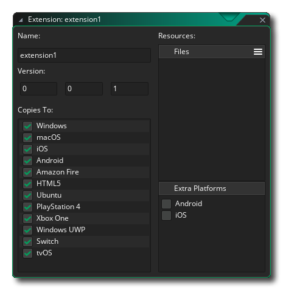
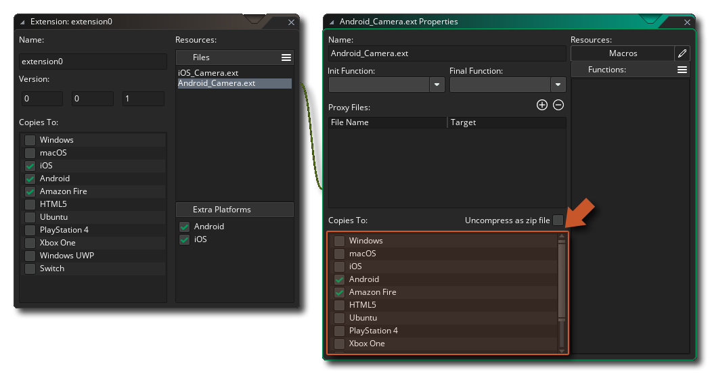
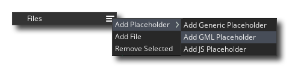

Un paquet d'extension peut être utilisé pour ajouter un nombre de fonctions et constantes GameMaker langage GameMaker (GML), ou pour transférer facilement des ressources de jeu ou même des projets entiers entre personnes. Si l'extension consiste à ajouter des fonctionnalités supplémentaires, les fonctions utilisées peuvent lier votre jeu à des SDK externes ou à du code source écrit dans d'autres langues (comme Java pour Android, par exemple), ainsi qu'au format GML natif. 
Normalement, les extensions tierces seront issues de GameMaker Marketplace et celles GameMaker vous êtes abonné seront ensuite répertoriées dans la fenêtre de la bibliothèque de Marketplace et pourront être installées à partir de cet GameMaker ou par un clic droit.  dans le dossier de ressources Extensions et en sélectionnant Ajouter un fichier existant dans ma bibliothèque. Si vous n'avez pas obtenu votre paquet d'extension du Marketplace, vous pouvez toujours l'ajouter à un projet en cliquant à nouveau avec le bouton droit de la souris.
dans le dossier de ressources Extensions et en sélectionnant Ajouter un fichier existant dans ma bibliothèque. Si vous n'avez pas obtenu votre paquet d'extension du Marketplace, vous pouvez toujours l'ajouter à un projet en cliquant à nouveau avec le bouton droit de la souris.  le dossier Extensions dans l’arborescence des ressources et cette fois-ci en sélectionnant Ajouter existant.
le dossier Extensions dans l’arborescence des ressources et cette fois-ci en sélectionnant Ajouter existant.
Si tu as un *.GMEZ créé avec une version précédente de GameMaker Studio vous pouvez les ajouter en sélectionnant le bouton droit de la souris  option de menu Importer un fichier.
option de menu Importer un fichier.
Pour plus d'informations sur l'utilisation et la création de packages d'extension, veuillez consulter les sections suivantes:
Une fois que vous avez ajouté une extension à l’arborescence des ressources, vous devez lui attribuer un nom, un numéro de version et définir les plates-formes sur lesquelles vous souhaitez l’exporter. En décochant certaines plates-formes, vous pouvez indiquer à GameMaker Studio 2 ne pas exporter l'extension dans le cadre de l'exécutable de ces plates-formes. Vous devez également vous assurer que les propriétés de l'extension correspondent aux plates-formes cibles et éditer les cibles d'exportation des fichiers d'extension en fonction des éléments suivants:
- Toutes les cibles: extensions GML. Ce sont des extensions réalisées avec le langage GameMaker (GML) et compatibles avec toutes les plates-formes cibles.
- Windows (Standard, UWP, XBoxOne): Vous pouvez utiliser des fichiers DLL Windows (bibliothèques de liens dynamiques).
- Mac OS: La cible Mac OS peut utiliser les fichiers DyLib standard pour les extensions.
- Ubuntu (Linux): Pour la cible Ubuntu, vous devez vous assurer que votre extension utilise des fichiers SO.
- Html5: Ces plates-formes peuvent utiliser des extensions JavaScript.
- Android: cette plate-forme nécessite une extension écrite en Java ou un SDK Framework Android.
- iOS: les extensions de cette plate-forme sont écrites en Objective C et requièrent un fichier *.mm et *.h, ou, si vous utilisez Frameworks, un fichier natif *.a précompilé.
- PlayStation: pour PlayStation 3 ou 4, vos extensions doivent être des fichiers PRX, chaque cible nécessitant un PRX différent pour être conforme aux spécifications de la cible (PS3 ou PS4). Si vous travaillez sur une PSVita, l'extension devrait plutôt être SUPRX.
Étant donné qu’une même extension peut avoir différents fichiers associés, il est possible de créer une seule extension pour plusieurs plates-formes. Dans ce cas, vous souhaitez spécifier toutes les plates-formes compatibles dans l’éditeur principal d’extensions (c.-à-d.: Cochez la case correspondante), puis dans le menu déroulant. propriétés de fichier individuelles pour chaque partie de l’extension, définissez la plate-forme vers laquelle ces fichiers doivent être exportés. Pour modifier la plate-forme cible d'un fichier d'extension ou d'un espace réservé spécifique, vous devez d'abord ouvrir les propriétés de l'extension (double-cliquez sur l'icône correspondante).
l'extension i l'arborescence des ressources ou l'utilisation
et sélectionnez Ouvrir les propriétés ), puis une fois dans les propriétés de l’extension, sélectionnez le fichier de ressources que vous souhaitez modifier à droite: 
REMARQUE: Si vous exportez vers la cible macOS ou Ubuntu, vous pouvez définir l'option "Décompresser en tant que fichier zip" pour conserver les droits d'accès au fichier pour l'extension.
Une fois que vous avez installé votre extension, vous pouvez utiliser ses fonctions et ses constantes exactement comme vous le feriez avec les fonctions et constantes intégrées utilisées dans le langage GameMaker. Si votre jeu est multi-plateforme (par exemple, il est conçu pour fonctionner à la fois sur Android cibles Windows et Android ), utilisez les constantes et les fonctions du système d'exploitation pour vérifier la plate-forme avant d'appeler des fonctions spécifiques à une extension pour éviter les problèmes, par exemple:switch(os_type)
{
case os_android:
call_android_extension_function(x, y, z);
break;
case os_windows:
call_windows_extension_function(x, y, z);
break;
}Notez que, pour différentes plates-formes, vos extensions peuvent partager des noms de fonction. Par conséquent, si vous avez une extension avec des fichiers distincts pour (par exemple) faire apparaître un message pour Windows et pour Android, les deux fichiers d’extension peuvent partager le même nom de fonction tant qu’ils le sont. tous deux configurés pour exporter uniquement vers leurs plates-formes respectives.
Pour créer une extension, vous devez d’abord faire un clic droit
Pour ajouter un fichier à la nouvelle extension, vous devez cliquer sur l'icône du menu.
et sélectionnez un fichier d' espace réservé ou le fichier réel requis pour la plate-forme cible: 
Un espace réservé "Générique" est un fichier qui peut être de tout type, à l'exception de ceux requis par les plates-formes spécifiques (par exemple, aucun fichier DLL ou SO, par exemple), et il ne sera utilisé que comme fichier "éditeur de liens" pour connecter un ensemble de fonctions ou de constantes avec l'extension donnée (en général, il est uniquement destiné aux extensions iOS et Android, comme l'expliquent les sections ci-dessous pour ces cibles). Vous pouvez également ajouter des fichiers d'espace réservé "GML" et "JS" pour une utilisation plus spécifique.
Normalement, vous n'avez pas besoin d'utiliser des espaces réservés à moins de créer pour iOS et Android. Vous devez donc choisir l'option Ajouter des fichiers pour ajouter l'un des fichiers suivants en fonction de la plate-forme cible à laquelle ils sont destinés:
- .gml: Ceci est un fichier créé uniquement avec le langage GameMaker et est compatible avec toutes les plateformes.
- .js: Il s’agit d’un format d’extension JavaScript compatible uniquement avec les modules cible JS (HTML5).
- .dll Remarque: Ceci est un format d’extension de bibliothèque de liens dynamiques et est uniquement compatible avec les cibles Windows, UWP et Xbox One (chaque cible aura besoin d’un fichier *.dll différent, compatible avec ses spécifications).
- .dylib: Ceci est l'équivalent Mac d'une DLL et est uniquement compatible avec la cible Mac (pas iOS).
- .so: Ceci est l'équivalent Linux d'une DLL et est uniquement compatible avec la cible Ubuntu (Linux).
- .prx Remarque: il s’agit d’un format de fichier permettant d’ajouter des fonctionnalités cible PS4 (chaque cible aura besoin d’un fichier *.prx différent compatible avec ses spécifications).
Vous remarquerez qu'il n'y a pas de type de fichier pour Android ni iOS, car leur configuration est légèrement différente. Vous trouverez plus bas des explications sur la manière de les configurer, mais commençons par créer une extension GML générale pour l'une des plates-formes cibles, car le processus est identique pour toutes.
Pour commencer, vous devez créer le fichier à utiliser. Pour une extension GML, il s’agit d’un fichier texte (enregistré avec le .gml extension) et serait formaté comme suit:
#define c_alice_blue
return make_color_rgb(240,248,255);
#define instance_create_colour
var i = instance_create_layer(argument0, argument1, argument2);
with (i)
{
image_blend = argument3;
}
return i;Comme vous pouvez le constater, chaque section commence par un #define call, qui dans l'exemple ci-dessus est utilisé pour définir deux fonctions. Vous n'avez pas besoin de fournir des champs d'argument pour les fonctions car celles-ci seront ajoutées plus tard. Utilisez simplement les options define puis le nom de la fonction, puis ajoutez le GML correspondant. Si vous écriviez une extension DLL ou JS, le processus serait similaire mais dans le langage correct pour le format du fichier d'extension.
Une fois que vous avez fait cela, vous devez ajouter le fichier à l'extension (expliquée ci-dessus), ce qui chaînera une nouvelle fenêtre dans les propriétés d'extensions pour les propriétés de fichier:
Ici, vous sélectionnez la plate-forme cible pour l'extension (pour GM, vous les sélectionnez toutes), renommez le fichier d'extension et définissez quelques autres détails, que nous traiterons dans un instant. Tout d'abord, nous souhaitons toutefois ajouter nos constantes et nos fonctions afin que l'utilisateur puisse appeler l'extension à partir de son code de projet. Pour cela, vous devez cliquer sur le bouton du menu des fonctions.
En sélectionnant Ajouter une fonction, vous pourrez alors ajouter une fonction à l’extension, qui peut ensuite être appelée dans GameMaker Studio 2 comme vous le feriez avec l’une des fonctions intégrées. La fenêtre suivante s'ouvre pour vous permettre de définir la fonction dans:
Dans l'image ci-dessus, nous avons renseigné l'éditeur de fonction avec les détails de la fonction. instance_create_colour que nous avons définis dans notre script d'extension GML (l'éditeur de fonction ne sert pas uniquement à définir des fonctions GML et sera le même pour tout autre type d'extension). Vous pouvez voir que nous avons donné un nom à la fonction, ce que vous appelez lorsque vous utilisez la fonction dans votre projet. Ce nom ne doit pas nécessairement correspondre à celui utilisé dans l'extension. Vous pouvez le définir comme vous le souhaitez et utilisez ensuite l'option Nom externe pour le lier au nom réel défini dans l'extension. Ci-dessous, vous trouverez une section permettant de définir le texte d' aide, qui est le texte qui sera utilisé dans la fenêtre contextuelle Code Complete et le texte d'assistance au bas de l'éditeur de code.
Ensuite, vous pouvez définir le type de retour, qui peut être un double (valeur de nombre réel à virgule flottante) ou une chaîne. S'il n'y a rien retourné par la fonction externe, cela n'a pas d'importance. Sous ce paramètre, vous définissez les arguments utilisés par la fonction. prendre.
Enfin, vous ajoutez les arguments (le cas échéant) que la fonction peut prendre. Les arguments peuvent être des doubles ou des chaînes, et vous pouvez les ajouter en cliquant sur le bouton Ajouter.
et supprimez-les en cliquant sur le bouton Supprimer
. Si votre fonction peut accepter des arguments variables, vous devez également vérifier la case à cocher Arguments de longueur variable en bas.
REMARQUE: Si vous créez un Windows dll fichier et il a plus de quatre arguments, tous les arguments doivent être du même type.Une fois que tout est fait, la fonction est prête à être utilisée dans un projet. Elle apparaîtra automatiquement et sera également codée par couleur. Les fonctions définies peuvent également être définies en tant que Fonctions initiales ou Fonctions finales, ce qui signifie qu'elles seront automatiquement appelées au démarrage du jeu (Init) et à la fin du jeu (Final).
IMPORTANT! Toutes les plates-formes prennent en charge l'appel de fonction Init, mais toutes les plates-formes n'effectuent pas l'appel de fonction final. En effet, certaines plates-formes fermeront simplement l'application sans préavis ni délai pour l'appel de cette fonction. Les plates-formes concernées sont les suivantes: iOS, Android, HTML5, PlayStation et XboxOne.
L'autre option que vous avez est de créer une macro. Une macro peut être une valeur constante ou un extrait de code unique (pour plus d'informations sur les macros, voir ici ). Par exemple, nous pourrions supprimer la fonction définie de notre exemple d’extension GML ci-dessus pour la couleur c_alice_blue et en faire une macro à la place. Pour créer une macro, cliquez simplement sur le bouton Macros dans la fenêtre Propriétés de l'extension:L'éditeur ici est assez explicite: vous donnez le nom de la macro / constante et la valeur, ou une courte ligne de code. Notez que si la macro est une ligne de code, elle sera évaluée à chaque appel de la macro.
Lorsque vous travaillez avec plusieurs plates-formes cibles, il convient de noter que vous pouvez créer une seule extension avec un seul ensemble de fonctions / macros qui fonctionnera sur toutes les plates-formes. Pour ce faire, vous n’ajoutez qu’une des bibliothèques de liens à votre jeu en tant qu’extension et vous placez la ou les autres dans la liste des fichiers proxy de la fenêtre Propriétés de l’extension. Par exemple, supposons que vous ayez une extension Windows avec la dll "Haggis.dll". Vous devez simplement répliquer cette dll sous la forme d'un DyLib Mac, en la nommant "libHaggis.dylib" et en vous assurant que les noms des fonctions internes correspondent à ceux de la dll d'origine. Cette bibliothèque DyLib serait alors ajoutée aux fichiers proxy et configurée pour exporter lorsque le jeu est exécuté sur la cible Mac. GameMaker Studio 2 l'utilisera automatiquement lors de l'appel des fonctions d'extension.
Pour ajouter un fichier proxy, cliquez simplement sur le bouton
bouton dans la fenêtre Propriétés de l'extension pour l'extension et naviguez jusqu'à l'emplacement du fichier. Une fois que vous l'aurez ajouté, vous devrez peut-être remplacer la cible de l'extension par le module approprié. Lors de votre prochain lancement, le jeu sera inclus en tant que proxy pour cette plate-forme. Vous pouvez aussi supprimer les fichiers proxy en cliquant sur le bouton
bouton, qui supprimera le dernier de la liste à chaque pression.
Une fois que vous avez ajouté vos fichiers proxy, ils seront stockés dans la YYP de votre jeu, dans le dossier Extensions (vous pouvez les trouver facilement en faisant un clic droit
Il est très important que vos fichiers proxy respectent les conventions de dénomination énumérées ci-dessous, car GameMaker Studio 2 analysera ces noms et affectera le module cible au fichier en fonction de son extension et de son nom et liera automatiquement les fichiers pour vous. Si vous ne suivez pas ces conventions, votre jeu risque de ne pas fonctionner au moment de l'exécution, car GameMaker Studio 2 ne pourra pas déterminer le fichier à utiliser ou ne le chargera pas correctement.
Les conventions de dénomination pour chaque plate-forme cible sont données ci-dessous:
Plate-forme Des noms les fenêtres <Nom>.dll. Linux <Nom>.so, lib <Nom>.so, <Nom> _linux.so, lib <Nom> _linux.so Mac OS X <Nom>.dylib, lib <Nom>.dylib HTML5 <Nom>.js PS4 <Nom>.prx, lib <Nom>.prx, <Nom> _ps4.prx, lib <Nom> _ps4.prx Xbox One <Nom> _xboxone.dll En utilisant les conventions ci-dessus, vous pouvez échanger la partie <Nom> contre le nom du fichier de base pour lequel vous ajoutez les fichiers proxy.
Pour créer une extension pour Android vous devez le faire en deux parties. La première partie consiste à ajouter l'extension elle-même, ainsi que les fichiers requis, etc... et la seconde consiste à créer les fonctions et les macros / constantes requises par l'extension. Les fonctions et les constantes sont ajoutées à l'aide de fichiers d' espace réservé pour les regrouper. Vous devez donc ajouter un espace réservé, puis définir les fonctions et les macros comme expliqué dans la section ci-dessus. Pour ajouter le reste des fichiers, vous devez d'abord cocher la case Android dans la section Fonctions supplémentaires de l'éditeur:
Ici vous donnez les détails suivants:
- ClassName: votre extension peut avoir plusieurs classes, chaque classe ayant ses propres fonctions et constantes. Vous devez donc lui attribuer un nom qui reflète son objectif.
- Autorisations Android: vous pouvez ajouter ici toutes les autorisations supplémentaires requises par votre extension. La nature de ces autorisations dépend entièrement de l'utilisation de l'extension. Vous devez donc consulter la documentation fournie par Google pour la Android forme Android ou, si vous utilisez un SDK tiers, la documentation fournie avec le SDK. Pour ajouter une nouvelle autorisation, vous devez cliquer sur le bouton
- Inject to Gradle Dependencies: vous pouvez ajouter ici tout code supplémentaire devant être injecté (ajouté) dans les dépendances de construction de Gradle.
- Inject to Android Manifest.xml Manifest: Ici, vous définissez tout code supplémentaire à injecter (ajouté) au fichier XML du manifeste Android lorsque votre jeu est créé à des fins de test ou de publication finale. Assurez-vous de réviser cela (et vos autorisations) avec soin avant de soumettre des jeux au magasin, car des paramètres incorrects provoqueraient l'échec de la soumission de votre jeu.
- Inject to Android Manifest.xml Application: vous définissez ici tout code supplémentaire à injecter (ajouté) au fichier XML du manifeste Android sous l'en-tête Application lorsque votre jeu est créé pour des tests ou une version finale. Assurez-vous de réviser cela (et vos autorisations) avec soin avant de soumettre des jeux au magasin, car des paramètres incorrects provoqueraient l'échec de la soumission de votre jeu.
- Inject to Android Manifest.xml RunnerActivity: vous définissez ici tout code supplémentaire à injecter (ajouté) au fichier XML du manifeste Android sous l'en-tête RunnerActivity lorsque votre jeu est créé pour des tests ou une version finale. Assurez-vous de réviser cela (et vos autorisations) avec soin avant de soumettre des jeux au magasin, car des paramètres incorrects provoqueraient l'échec de la soumission de votre jeu.
Une fois que vous avez configuré cela correctement, vous devrez ajouter les fichiers requis pour que votre extension puisse fonctionner. Pour ce faire, vous devez cliquer sur les boutons situés en bas, soit Ajouter un kit de développement logiciel ( SDK) ou Ajouter une source, puis rechercher les fichiers que vous souhaitez ajouter. Les fichiers ajoutés seront stockés dans le répertoire Android Source avec votre extension. Vous pouvez ouvrir cet emplacement à tout moment en cliquant avec le bouton droit de la souris.
Pour plus d'informations sur la création d'extensions Android, veuillez consulter la base de connaissances de YoYo Games.
Pour créer une extension pour iOS, vous devez le faire en deux parties. La première partie consiste à ajouter l'extension elle-même, ainsi que les fichiers requis, etc... et la seconde consiste à créer les fonctions et les macros / constantes requises par l'extension. Les fonctions et les constantes sont ajoutées à l'aide de fichiers d' espace réservé pour les regrouper. Vous devez donc ajouter un espace réservé, puis définir les fonctions et les macros comme expliqué dans la section ci-dessus. Pour ajouter le reste des fichiers, vous devez d'abord cocher la case iOS dans la section Fonctions supplémentaires de l'éditeur:
Ici vous donnez les détails suivants:
- Drapeaux de l'éditeur de liens / Drapeaux du compilateur: Certains frameworks et kits de développement logiciel (SDK) tiers nécessitent l'ajout d'indicateurs de l'éditeur de liens et du compilateur supplémentaires (voir la documentation fournie avec le SDK ou le framework en question pour plus de détails).
- Nom de classe: votre extension peut avoir plusieurs classes, chaque classe ayant ses propres fonctions et constantes. Vous devez donc lui attribuer un nom qui reflète son objectif.
- Nom de la classe de délégué d'application: nom de votre classe de délégué d'application personnalisée. Ce paramètre permet à l'extension de remplacer / étendre les fonctionnalités de l'application principale. Pour utiliser cette fonctionnalité, vous devez procéder comme suit:
Pour vous assurer que votre extension fonctionne avec toute autre extension utilisant des délégués d'application personnalisés, vous devez appeler des méthodes de classe de base à partir de méthodes remplacées dans votre classe enfant. Avant d'appeler la méthode superclass, vous devez vous assurer qu'elle est implémentée dans la hiérarchie des classes pour éviter les erreurs, par exemple:
- Assurez-vous que les fichiers source de délégué portent le même nom que la classe de délégué (par exemple, @interface MyCustomAppDelegate devrait être défini dans " MyCustomAppDelegate.h ")
- Ajouter le ${YYExtAppDelegateIncludes} variable d’environnement en haut du fichier d’en-tête du délégué de votre application. Celui-ci sera remplacé au moment de la compilation par les fichiers d'inclusion appropriés pour la classe de délégué parent.
- Utilisez le ${YYExtAppDelegateBaseClass} variable d’environnement en tant que classe de base pour votre délégué d’application personnalisée. Ceci sera remplacé au moment de la compilation par la classe déléguée de base correcte.
- (BOOL)application:(UIApplication *)application willFinishLaunchingWithOptions:(NSDictionary *)launchOptions
{
// Check if any superclasses implement this method and call it
if([[self superclass] instancesRespondToSelector:@selector(application:willFinishLaunchingWithOptions:)])
return [super application:application willFinishLaunchingWithOptions:launchOptions];
else
return TRUE;
}- Frameworks système: vous pouvez ajouter ici n'importe quel framework système iOS à votre extension. Ceux-ci sont ajoutés en cliquant sur le
- Inject to Info.plist: Ici vous pouvez ajouter n’importe quel code pour être injecté dans le fichier. info.plist fichier.
- Cadres et offres tiers: Cette section permet d’ajouter des cadres et des offres SDK tiers. Comme avec le système fonctionne, vous cliquez sur le
Si des extensions de structure système ou tierces ont été ajoutées à votre extension, elles seront désormais répertoriées dans la fenêtre Propriétés de l'extension, chacune avec une case à cocher. Si vous cochez la case, vous activez la liaison faible, ce qui est utile si vous devez "écraser" tout symbole de la bibliothèque incluse avec votre propre valeur, mais il convient de noter que cela ralentira la liaison.
Pour plus d'informations sur la création d'extensions iOS, veuillez consulter la base de connaissances de YoYo Games.


Extensions YoYo Games
Les versions GameMaker de GameMaker avaient de nombreuses fonctionnalités tierces intégrées, mais cela était inefficace et difficile à maintenir, car si une fonctionnalité spécifique était modifiée par la tierce partie, l'ensemble de l'EDI et du moteur d'exécution de GameMaker devraient être mis à jour. Ainsi, les versions actuelles ont adopté l'utilisation de packages d'extensions pour ajouter un support tiers à vos jeux. Cela signifie que vous ne pouvez ajouter que les fonctions supplémentaires dont vous avez besoin et que vous pouvez même les adapter et les modifier pour répondre à vos besoins spécifiques.
La plupart de ces extensions seront téléchargées et installées pour vous lorsque vous sélectionnerez une option de jeu spécifique (telle que Facebook ou Google Ads, par exemple), mais vous trouverez des informations supplémentaires à leur sujet dans les articles suivants YoYo Games la base de connaissances YoYo Games:
Vous pouvez trouver les extensions elles-mêmes sur la page suivante du marché:
Notez que ces extensions sont fournies avec une démo et un fichier d’aide qui explique comment les utiliser. Par conséquent, leurs fonctions ne sont pas décrites dans le manuel.